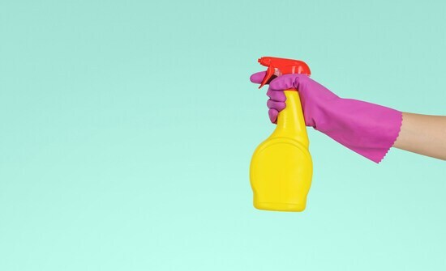

Убери яды
1. Воздействие химических веществ неизбежно в наши дни. Человек уже много лет использует различные химические вещества: они есть в воде, пище, воздухе, быту и сельском хозяйстве. Многие из них обладают высокой токсичностью и представляют серьезную угрозу для здоровья человека и окружающей среды. Важно знать эти химические вещества и избегать контакта с ними. Воздействие химикатов может происходить через различные места контакта (кожа, легкие, слизистые), а также при различных сценариях воздействия. Итак, вот одни из самых опасных для человека веществ - ботулинический токсин, ртуть, мышьяк, диоксин, полихлорированные бисфенолы (ПХБ), свинец, асбест, цианиды, арсен, бензол, полоний-210, зарин, аматоксин.
2. Чем опасны синтетические вещества?
Оказывают сильное воздействие на здоровье и гормональную систему
организма. Среди них особенно опасны бисфенол А, ПХД и ПБД (полибромированные дифенилы).
Бисфенол А и фталаты используются в производстве пластмасс. Содержатся в пластике для бутылок, внутри алюминиевых
банок, детских игрушках, красках, напольных покрытиях, ароматизаторах для помещений, косметике. ПХД и ПБД содержатся в
пластиковых отходах и других материалах, которые попадают в реки, озера и моря. Эти вещества используются в электронных
устройствах, строительных материалах, огнетушителях, электронном оборудовании, машинных смазках, красках для текстиля. Их еще
называют ксеноэстрогенами, способными имитировать действие полового гормона эстрогена. Опасность фталатов в
том, что они способны накапливаться в нашем организме, распространяясь по всем органам и нанося огромный вред
гормональной системе, печени, легким.
Чтобы избежать попадания в организм бисфенола А и эфиров фталевой кислоты, не рекомендуется нагревать пищу и напитки в пластиковых контейнерах и пакетах в микроволновой печи, а также класть пластик в посудомоечную машину. Следует знать, что часто бисфенолом А покрыта бумага для выпечки. Не храни в пластике горячие или теплые жидкости. Безопаснее использовать стекло, силикон, сталь. Избегай хранения растительного масла в пластиковых бутылках. Выбирай детские игрушки из натуральных материалов. Избегай продуктов для гигиены полости рта, косметики и бытовой химии с бисфенолом А и фталатами. Отдавай предпочтение продуктам с маркировкой, указывающей на отсутствие фталатов и бисфенола. Чаще всего вредные компоненты называют одним, на первый взгляд не вызывающим подозрений словом "отдушка" или "ароматизатор". Многие цивилизованные государства уже рассматривают возможность запрета на использование фталатов. Маркировка фталатов: BBP, DBP, DEHP, DEP, DHP, DIDP.
3. Чем опасны фитоэстрогены?
Это вещества, похожие на половые гормоны, но содержащиеся в пище. Особенно много их
в соевых продуктах, семенах льна, кунжуте, капусте, чесноке и луке, бобовых культурах, орехах, персиках, красном вине, пиве и др.
Высокое потребление фитоэстрогенов приводит к уменьшению количества сперматозоидов в сперме, уменьшению мышечной массы,
преждевременному половому созреванию у девочек, нарушению менструального цикла, увеличению веса, увеличению груди, мигрени.
Избыток эстрогена увеличивает риск образования закупорки кровеносных сосудов, а также нарушений функций печени.
4. Чем опасны пестициды?
Это химические или биологические препараты, используемые для борьбы с вредителями
и болезнями растений (гербициды, фунгициды, инсектициды, регуляторы роста). ВОЗ предупреждает, что пестициды могут приводить к
неблагоприятным последствиям для репродуктивной, иммунной или нервной системы, а также к онкологии. Пестициды, используемые в
сельском хозяйстве, могут вызвать отравление. Следует знать, что превышения по пестицидам зафиксированы у следующих культур -
перца чили, сельдерея, картофеля, томатов, шпината, персиков, нектаринов, яблок, груш, клубники, вишни и винограда. Таким образом,
целесообразно выбирать фермерские овощи и фрукты с экологическими методами обработки и удобрения посадок.
5. Чем опасны тяжелые металлы?
Свинец - один из самых токсичных металлов, особенно токсичен
для детей. Основным источником свинца являются старые краски, поэтому их следует осторожно удалять с поверхностей. Дома лучше установить
качественный фильтр для воды с обратным осмосом, который задерживает свинец, содержащийся в питьевой воде. Мышьяк -
тяжелый металл без цвета, запаха и вкуса, один из древнейших известных человечеству ядов. Чтобы избежать токсического воздействия мышьяка,
следует использовать высококачественные фильтры для воды и защищать грунтовые воды от отходов животноводческих ферм. Ртуть
из горючих углеродных продуктов достигает воздуха и океанов, попадая в организм человека с рыбой и морепродуктами.
6. Будь осторожен с пищевыми добавками, так называемыми "Ешками". Многие из них вредны для организма человека, так как нарушают деятельность желудочно-кишечного тракта, функцию кожи, вызывают аллергию, могут содержать много холестерина. Есть и такие добавки, которые являются канцерогенами: Е131, Е142, Е210-217, Е239, Е330. В России категорически запрещены следующие пищевые добавки: краситель Е121 (цитрусовый красный), Е240 (формальдегид), Е173 (порошковый алюминий, применяемый при украшении конфет и других кондитерских изделий).
7. Несомненно, опасны для здоровья человека сигареты, алкоголь, наркотики, гормоны.